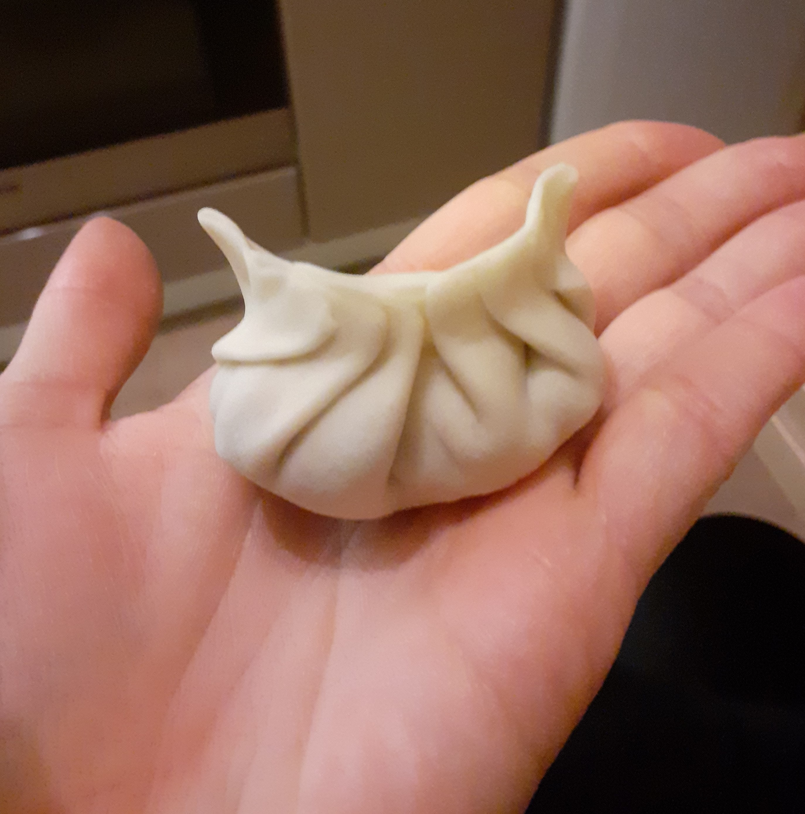
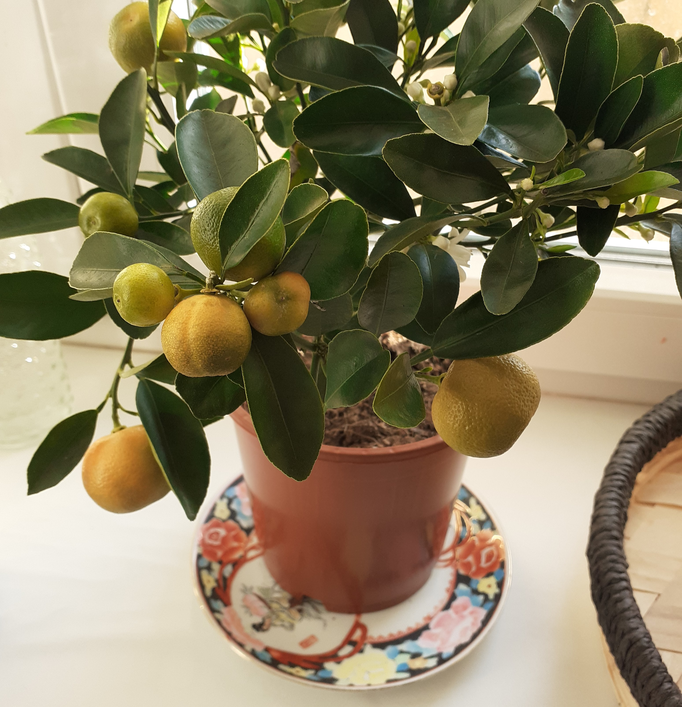
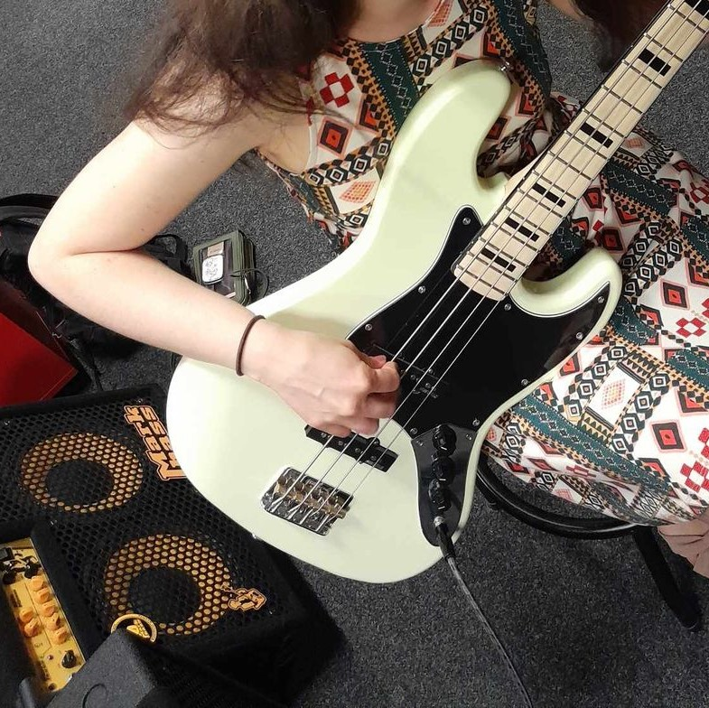
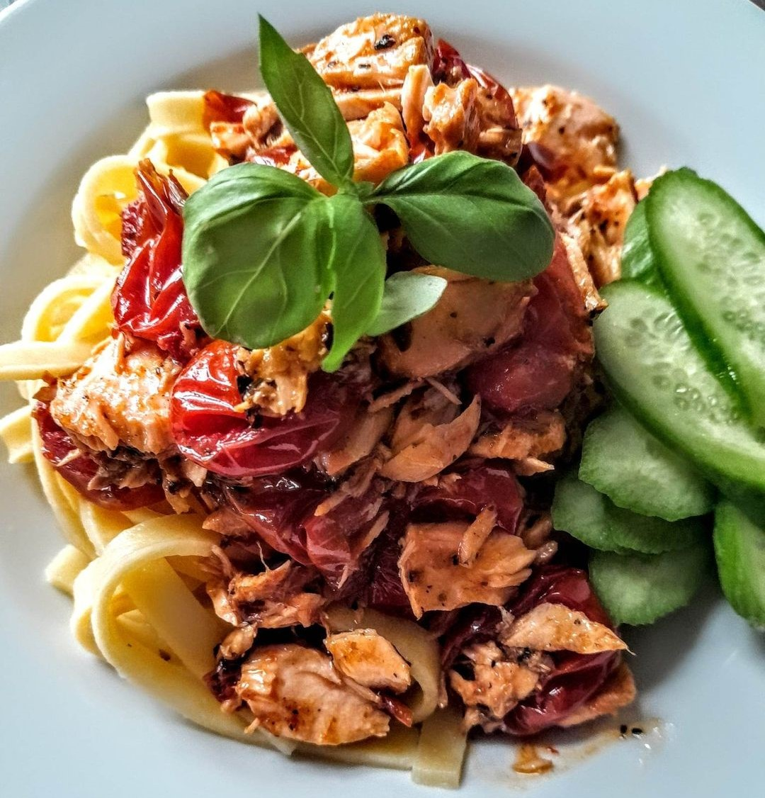
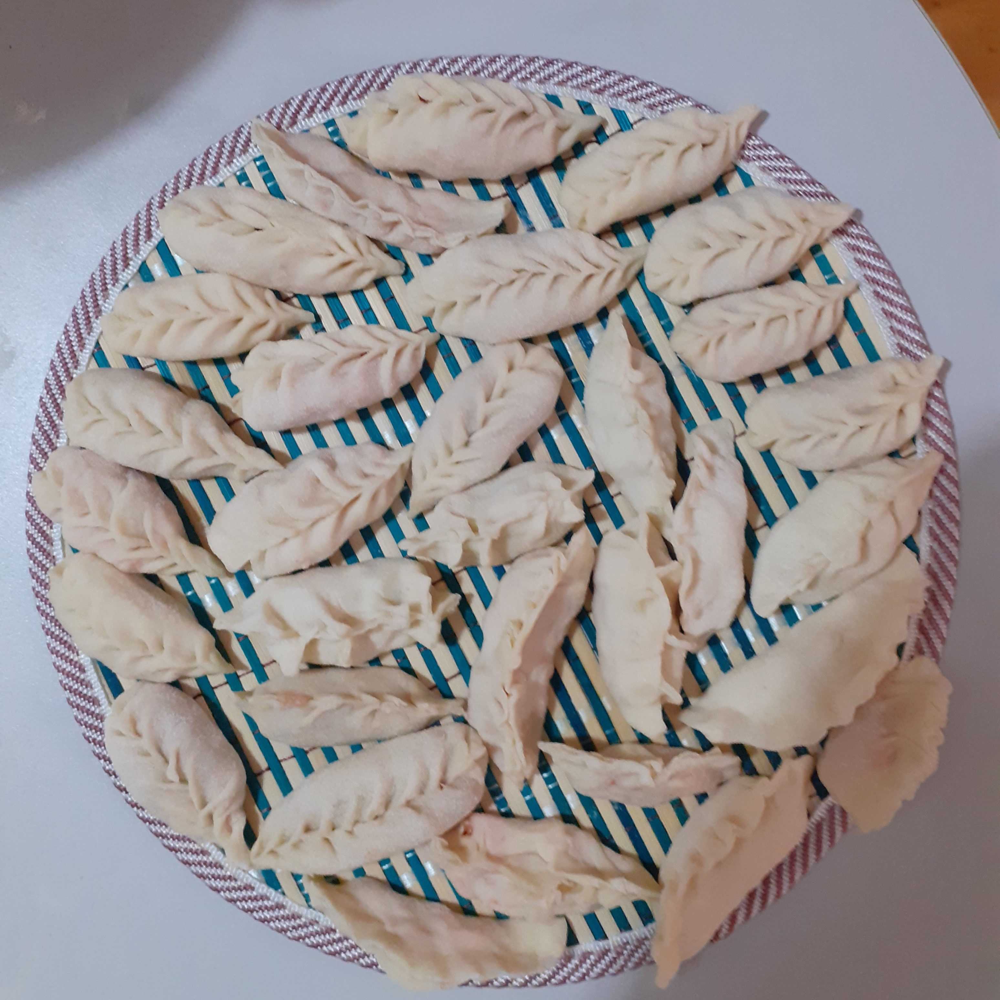
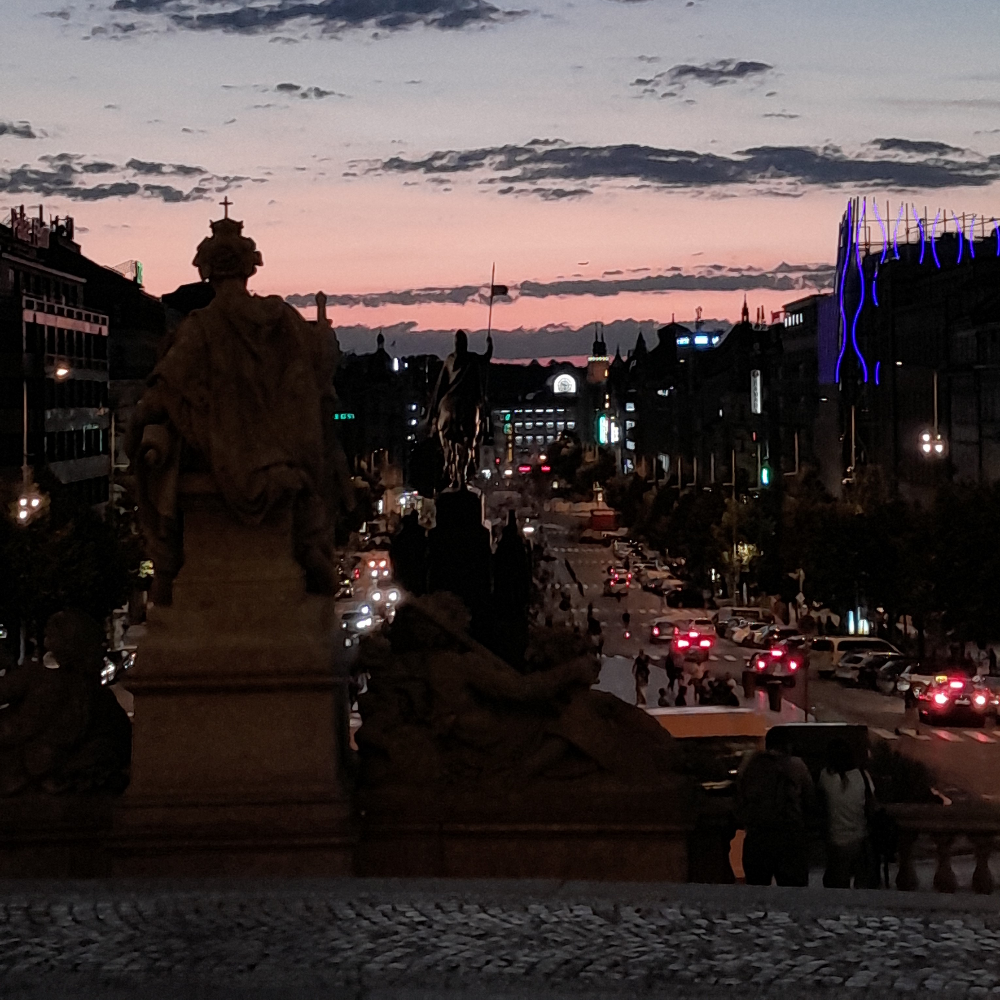

Ahoj! Som Ivana Janoštíková a žijem v Olomouci. V súčasnosti pracujem ako nákupca IT komodity v korporátnej firme. V blasti IT nákupu sa pohybujem asi dva roky, predovšetkým spracovávam objednávky a pomáham svojim nemeckým kolegom s dodržiavaním nákupných procesov. Mojím cieľom je naučiť sa kódovať webové stránky, neskôr "pričuchnúť" k Javascriptu a vo všeobecnosti získať nové praktické znalosti v oblasti IT. Vyštudovala som Univerzitu Palackého v Olomouci, odbor: Čínska filológia. Hovorím nemecky, anglicky a čínsky.
Vo voľnom čase sa rada vzdelávam. Predovšetkým neustále zlepšujem svoje jazykové zručnosti. Okrem toho milujem fantasy literatúru. Aktuálne sa snažím prelúskať Dunu: Mesiah od Franka Herberta. Nepohrdnem ani Pánom Prsteňov, Zaklínačom a očas siahnem dokonca aj po motivačných knihách od Jordana Petersona. Od Petersona práve čítam jeho 12 Rules for Life. Je to perfektná kniha, odporúčam ju každému, kto má aspoň trochu rád knihy tohto druhu. Je to skutočne Sokrates našej doby. Približne rok sa učím hrať na bassgitaru. Mám rada kapely ako MUSE, From Out Hands, EDITORS, speváka Lennyho Kravitza či Ville Vallo.Milujem čínsku kuchyňu, rada varím najrôznejšie jedlá, predovšetkým čínske knedlíčky jiao-c'.
     